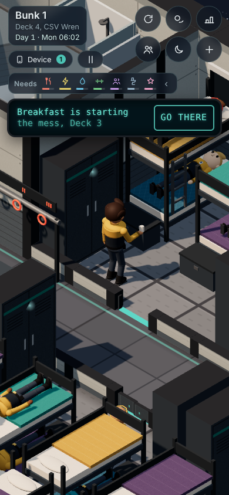

Playtest Patch Plan
plans/patch-plan-review.md on claude/patch-plan-review). Revision 3 (later that day): your pick for the first Monday, First Light Cocoa, with its draft words, and your two new asks: cocoa at the bar (#29) and the mug in your hands (#30). Two small questions about the cocoa are at the bottom. Nothing is built yet. The patch comes after Dev mode, whose day jump and tradition start make every item quick to test.At a glance
- 27 of 28 reproduced. #25 is a wording change, so there was nothing to reproduce. #13 and #18 were confirmed from the code and the words, and #17 is partly reproduced. The reviewer re-ran #1, #7, #9 and #12 and got the same results.
- Six batches, about 21 turns: the arrival week (A, B, C), the crew's life (D), small features (E), and the four needs numbers (F). #23 goes to the events plan, as you chose.
- What changed from your answers and the review:
- Day 2: the Chief gets her own desk back and leaves in good time (#1).
- Only the Captain's music evenings change (#7).
- The crew keep a gap when they step out of the lift (#10).
- The time clock: an early clock-out is confirmed, and everything else gets a 5-second Undo (#6).
- Training day: Zeke keeps you in the bay, sends you to clock out, then the beam at 17:05 (#18, #19).
- Your first Monday ends with First Light Cocoa in the bow lounge, and you can see your cocoa mug in your hands (#26, #29, #30).
- The tuning shows what a repair really takes once all four needs numbers are in, and it lands on your 30 minutes (#16).
python3 tools/section.py --where LINE finds them later.Build order
A. Day 2, your first solo job (#1, #2, #28)
The Chief is at her own desk and the meeting starts when you're both there. Everything says "first solo job". The laundry lesson works whenever you get up.
B. The arrival evening (#3, #4, #14, #15)
The Chief walks over to your table. Zeke's "evening's yours" lines become bubbles. The device button glows, with a pointer, until you first open it. The laundry line is corrected.
C. Training day (#11, #12, #17, #13, #18, #19)
Arrows move on from a tracked briefing. Zeke steps aside and keeps a little apart. The device tip names the long job's bar. At 16:50 Zeke says good job, sends you to clock out with an arrow to the clock, then takes you to the beam at 17:05, with the arrow on your spot.
D. The crew's life (#7, #9, #10, #8)
The Captain on Deck 4 on Thursday plus about one evening. Crew reach the toilet and hold it from when they arrive. Crew leaving the lift keep a gap. The stall light turns red when a stall is taken.
E. Small features (#25, #21, #6, #24, #5, #30, #29, #26)
"Officer's Quarters - Science" on the lift. "Junior Officer" and the other ranks on crew cards. The time clock's confirm and Undo. A buy menu at the shop. A working ladder with Engine control and the Sensor array open. The mug in your hands, then cocoa at the bar, then First Light Cocoa on your first Monday: in that order, because the tradition hands you the mug.
F. Needs tuning (#16, #20, #22, #27)
All four of your numbers together, with the repair factor set so a normal day's Tier 1 repair comes out at your 30 minutes.
Why this order. A, B and C are what every new player meets first, and they mostly run only in the arrival week, so they're the safest start. D changes the crew's day and gets its own careful check round. E's features each come with a switch. F comes last, so the career numbers that Dev mode's "Set career" table records are only re-measured once (see #16).
The 28 items, and your two new asks (#29, #30)
Tap an item to open it. Your note comes first, word for word; "Revision 2" says what changed.
#1Day 2: the Chief isn't in her office for your first solo jobA · 1½ turns
YOUR NOTEDay 2, "Your first solo job": the meeting never started when the user walked into the Chief's office; Calder wasn't there, a red-haired crew member was. Fix so Calder is in her office for it and the meeting starts reliably on arrival. No cutscenes, but the conversation may auto-play, and the player may auto-sit.
Reproduced: yes (the reviewer reproduced it too). On Day 2 Calder spent the whole meeting time in Main storage. At 08:56 the meeting opened with only you in the room, by its 10-minute fallback. The red-haired person is Marta Soto, a Works technician, sitting at the office's only desk, 5-office-1. That desk is the Chief's own chair (line 7301), but it's handed out as an ordinary Works desk.
Cause, three things.
- No spot for the Chief. Her appointment has nowhere to go in her office.
introPlan(section 14, lines 10518-10531) skips desks and the office's two "event" places, so she stays in storage. - The window is 08:45-09:00, and the shift starts at 09:00 (section 21, line 39207;
introWeekMeetings, 39866-39878). Come at 09:00 or later and you only get the gist in Mail. That is most likely why yours "never started". - Her desk is given to Marta.
Fix.
- The Chief's desk is hers.
5-office-1becomes Calder's own desk, and Marta gets another Works desk. Calder then works in her office most mornings, and the user's red-haired person is gone. - She's sent early. On Day 2 her appointment is at her desk and starts 20 minutes early. That's a new per-appointment "early" field: it changes what section 21 hands section 14, so it goes to the sim engineer first. Her walk from storage is 14 minutes if she's elsewhere.
- Her block ends when the meeting is done, so she isn't kept there.
- The meeting is open 08:45-10:00 and counts as work time. It starts when both of you are in the room. The fallback waits longer than her longest walk: it runs only if she still isn't there at 09:15, or 20 minutes after you arrive.
- Seating. She stays at her desk; you're walked to the visitor's spot and the lines play by themselves. You stand, since her first line is "Come in. Don't sit."
Tried on a scratch copy with a spot for her: she walked in at 08:54 and the meeting started with her there.
Risk: the desk swap moves crew on Deck 5 (day_check and cadet_test differences, checked as in batch D); the rest is intro only. A nit to check: in the first week, being in the office counts as at work, and clocking in after a 09:30 meeting must not set off the "late" tip (line 37009). Dev mode: jump to Day 2 08:30 with the arrival done, then walk in at 08:44, 08:58, 09:05 and 09:40.


#2Naming: "first job" → "first solo job"A · in #1's turn
YOUR NOTENaming: everything about it says "first solo job" (e.g. the Schedule/heads-up title "The Chief's office: your first job" → "…your first solo job"; Mail, Tracked, Settling-in, lines).
Reproduced: yes. #1's first screenshot shows the heads-up "your first job is starting". The places to change:
- Section 19, line 10909,
DEV_BEATS['d2-solo']: "The Chief's office: your first job". This one title feeds the Schedule, the heads-up and Tracked. content/lines/calder.lines:138: "Your first job's mine. Glass office, quarter to nine…"content/meetings/introChief.meet: the gist that goes to Mail ("Your first job on Tuesday is hers") and line 13 ("Tuesday, your first job's mine").- Section 21's stand-in words, used only if the writers' words are missing: line 39189, and line 39543, which also has the wrong time ("Ten to eight"; the briefing is at ten to nine).
- The solo job's meeting file header says "Tuesday 07:45" (a comment; the game uses 08:45).
Already right: the solo job's Mail, its Settling-in item, and Zeke's "your first solo job today". Left alone, because they already mean solo or mean any first job: "First job's always the hardest", Jo's call "Your first job on your own", the goodbyes.
Dev mode: jump to Day 1 evening and Day 2 08:30 and read the Schedule, the heads-up and Tracked.
#28Day 2's laundry lesson only works if you wake before 09:00A · ½ turn
YOUR NOTEDay 2 laundry tutorial breaks if you don't wake up at 06:00; it must work whenever you get up.
Reproduced: yes. Waking at 06:00, the tip "Tuesday is laundry day…" shows at 06:18, and the wardrobe, hamper, arrow and washer all work. Waking at 09:00 or 10:00, the tip never shows. Nothing mentions laundry until the 10:00 "Yesterday's clothes" toast or Zeke's line after 16:45.
Cause. The lesson is one tip that may only show from 06:00 to 09:00 on Day 2 (section 15, line 12389). The rest of the lesson isn't tied to the morning.
Fix. The tip is due any time on Day 2 when you're awake and not clocked in, with three wordings (writers):
- Before the shift: today's words.
- Late, with the shift already started: "Laundry's for after your shift. Clock in first; the washers will wait." That way a late riser isn't sent to the laundry first.
- After the shift: "Laundry day: your hamper's in Bunk 1, the washers are on the far corridor."
Dev mode: jump to Day 2 with alarms at 06:00, 09:00, 10:30 and 13:00.


#3The Chief doesn't walk up to you at the arrival dinnerB · ½ turn
YOUR NOTEWelcome tour / intro to the Chief: Calder is there but doesn't walk up to you. She should.
Reproduced: yes. When you reach the table at 18:32, Calder is already sitting across from your seat, and she never moves. Zeke's "Oh. Look who's coming over. Sit up straight." plays after she has been sitting there for 14 minutes.
Cause. Your earlier note (0.71.3: "the Chief isn't at the dinner with Zeke") was fixed by seating her across from you from the start (section 21, lines 39176-39179). The walk-over code is still there (calderGo, lines 40040-40046, on "Look who's coming over"), but she's already in that seat, so it does nothing.
Fix decided: she walks over: during Zeke's chat she eats at a nearby table you can see, so she's still visibly at the dinner. On "Look who's coming over" the existing walk-over brings her to your table, and her meeting starts once she's seated.
Dev mode: jump to Day 0 18:30.

#4Zeke's "the evening's yours" plays in the green panel, not a bubbleB · ½ turn
YOUR NOTEZeke's line after the dinner with the Chief ("the evening's ours" or similar) should be a speech bubble over Zeke, not the green text at the bottom of the screen.
Reproduced: yes. The green text is the dinner chat, a meeting that plays in the device panel: "Off at five. Dinner from five till half eight. Then the evening's yours. Gym, lounge, Tiles, bed." His goodnight after the Chief leaves is already a bubble. But only 2 bubbles show at once (section 8b, line 47596), so the crowd's chatter can push it off early.
Fix decided: goodnight bubbles:
- The writers move the "how a day runs … the evening's yours" lines into Zeke's goodnight (
walk.goodnight.1..4, said as bubbles byintroSay, line 39697). - The chat keeps the question with three replies.
- While Zeke says goodnight, the overheard chatter near you is held back. That chatter is picked in section 22 (the dialogue engineer's) and drawn as bubbles in 8b (the performance engineer's), so both review.
Dev mode: jump to Day 0 18:30.


#14The device button the first time you get itB · ½ turn
YOUR NOTEThe device button the first time you get the device: an arrow to it, or it lights up.
Reproduced: yes. When Zeke hands the device over in Bunk 1 (18:16), the button just changes from a dim "No device yet" to "Device" with a Mail count. The only pulse is the short one every new Mail gets.
Cause. deviceLockLook() (section 15, lines 13245-13249) only resets the button's look. Nothing points you to the first open (SHIP.device.booted, section 19, line 11069).
Fix decided: glow + pointer: from the moment it's yours until you first open it, the button's teal ring pulses gently, with a small "Tap your device" pointer under it. Both stop on the first open and never come back. At test URLs the device is already opened, so the pointer never exists there and cadet_test is unaffected.
Dev mode: jump to Day 0 18:10.

#15Zeke points out the laundry on the wrong side of the shipB · tiny
YOUR NOTEWelcome tour: Zeke points out the laundry room, but it's on the other side of the ship. Fix where he points (or what he says).
Reproduced: yes, from the map. "Laundry there. Put your name in everything. Trust me." (content/lines/torres-zeke.lines:295) is said in the north junior corridor. The laundry's door is on the south corridor, twelve rows away.
Fix. New words, since the tour doesn't pass the laundry: "Laundry's on the far corridor, past Bunk 4. Put your name in everything." The stand-in at 21's line 39529 changes the same way.
#11After the Chief's first briefing, a tracked arrow blocks the next arrowsC · ½ turn
YOUR NOTEArrow after the Chief's first briefing (Day 1): if you track the briefing, the arrow doesn't then point to the job board.
Reproduced: yes, exactly. Tracked, the arrow says "Works bay, Deck 5" from 08:20 to 09:25 and never moves on. Untracked, "Clock in…" comes at 08:50 and the board at 09:22.
Cause. A tracked arrow never clears itself (section 15b, trkTap, line 14923). The arrival week's own arrows wait for any arrow that isn't theirs (section 21, introArrowTick, line 39939).
Fix. A tracked arrow clears itself, by kind:
- A meeting, tradition or appointment: once it has started with you in its room, or once it's over.
- A job: when it's taken or done (as today).
- A place: when you arrive.
Dev mode: jump to Day 1 08:20, track the briefing, and watch after 09:05. Start a tradition while it's tracked.


#12Stuck on Zeke with hold-to-walk on training dayC · with #17
YOUR NOTEStuck on Zeke on training day: with hold-to-walk you get stuck on him (collision drops only after ~2 s of pushing); tap-to-walk gets past. Hold-to-walk must slide past him.
Reproduced: yes (the reviewer too). It took 2.87 s to get past him, from three angles.
Cause. Crew step aside for you unless they're talking (section 15, line 13480). On training day Zeke counts as talking nearly all day (section 21, line 39817), so you only get through by the 2-second push (PUSH_MS, line 14143).
Fix. An escort following you steps aside even while talking, and carries on talking. Pass mark: holding to walk through him from three angles gets past in under 0.5 s, and he doesn't step straight back into you (the shuffle's 1.5 s cool-down against his follow mode re-aiming at you).
Dev mode: jump to Day 1 09:15 and hold-walk into him.
#17Zeke and you in the same spot (tour and training day)C · 1 turn
YOUR NOTEZeke and the player clip into the same spot during the welcome tour and training day; they should stand apart.
Reproduced: yes on the tour, partly on training day. Following the arrow, Zeke stood inside you in 3 of 12 checks in the Deck 4 wing and 11 of 13 leaving for the lift.
Cause. Zeke walks to the step's spot, which is the same tile the arrow sends you to, and waits there with no gap (section 10, escortStep, lines 48728-48751). Tap-to-walk paths also go straight through crew (line 48195).
Fix.
- Zeke stops about 0.9 m short of you. When his spot is yours, he takes the free tile beside you and faces you.
- A tap that ends on a standing crew member stops on the tile next to them. This touches every tap, so it's gated or proven identical.
- The escort keeps his own pace, even if #10's speed spread lands first.
- Later training days use the same walk, so they're fixed too.
Dev mode: jump to Day 0 17:30 and Day 1 09:00.

#13The green tip about using your device while you workC · ½ turn
YOUR NOTEThe green tip about checking your device while working: great timing, keep it, but make it more specific: it's about using the device while a long work action fills up (don't say "meters", don't say "in between jobs"); it popping during a long work action makes it clear.
Confirmed from the code. Today's words: "Working is a good chance to check out your device. Have a look at the apps between jobs." It shows at any moment you're on shift on Day 1, between 09:30 and 17:00 (section 15, line 12388). Its popping during a long job for you was luck.
Fix. New words (writers): "While a long job's bar fills, you can open your device: check your Schedule, Mail or Tracked. The work carries on." It now waits for a long work step (a hold of about 10 ship minutes or more) to be under way, on any day of your first week, so it can't be missed.
Dev mode: jump to Day 1 09:30 and start the first repair.
#18End of training day: Zeke says breakfast, at the wrong timeC · ½ turn
YOUR NOTEEnd of training day: Zeke mentions breakfast instead of dinner and gets the time wrong (it's after 5). When the shift ends he should say good job and that you'll be on your own tomorrow.
Partly reproduced. Nothing is written for the end of training day: Zeke's lesson lines end at 16:30 (section 21b, line 39204). After that he only has his everyday small talk, and one line isn't tied to a time of day: "Ten more minutes with the coils. Breakfast in five." (content/lines/torres-zeke.lines, line 376).
Fix.
- Writers: that line plays only in the morning (
? time:morning). - A new end-of-day moment at 16:50 on Day 1. Zeke comes to find you: "Good job today. Proper work, that." then "Tomorrow you're on your own. You'll be fine. Read the card twice." Then (your comment on #19) "Clock out first, then come to the beam. They're waiting for you."
Dev mode: jump to Day 1 16:45 in the Works bay.

#19Your name on the Works beam: you can't miss it, and the arrow points at your spotC · 1 turn
YOUR NOTEYour name on the Works beam: should happen before dinner so players don't miss it; and the arrow must point to the right spot on the beam (upper left, where your name goes).
Reproduced: yes. The tradition runs 17:05-17:40, after the shift. The arrow points at the middle of the beam, about 3.4 m right of the top-left slot where your name goes (section 18, line 34743). Zeke's day with you ends at 16:30 and dinner opens at 17:00, so players walk off.
Fix decided: keep 17:05, Zeke holds you from 16:50:
- At 16:50 Zeke finds you (#18), says good job, and tells you to clock out. An arrow points to the time clock.
- Once you've clocked out, the arrow moves to the beam's top-left name slot (
BEAM.slots[0]), raised to the beam's height. The dinner nudges wait until your name is up. - The tradition keeps its time, so the Works crew's day doesn't change: intro only.
Dev mode: start the beam tradition on demand to check the arrow; jump to Day 1 16:45 for Zeke's hold.
#7The Captain spends too long on Deck 4D · 1 turn
YOUR NOTECaptain on Deck 4: she hangs out there too often; occasionally is fine.
Reproduced: yes (the reviewer measured 11.8 h). Captain Marrow spends about 11 hours a week on Deck 4 in about 10 visits; the other Deck 2 officers average 3. Most of it is the music room on her days off.
Cause. She has two music pulls:
- A "music" habit, a strong pull to the Deck 4 music room in free time (section 14, line 9197). This is the main one.
- Her musician story, which plays on 55% of evenings plus every Thursday (line 10185). That line covers every musician on the ship.
Fix decided: Thursday plus about one evening:
- Drop her "music" habit: a data edit in
plans/crew-roster-gen.py(line 69), then regenerate section 9. The diff must change only Marrow's row; the habits also feed gift tags and the habit-change stories. - Her other-evening chance goes .55 → .15, for the Captain only (
captain ? (thursday ? 1 : .15) : .55). Thursday's piano is kept.
Expected: about 3-4 h a week, including her Saturday laundry and passing through. The other musicians are unchanged; applied to everyone, it would have halved Mbeki (9.3 → 4.0 h) and Ueda (5.8 → 2.4 h).
Dev mode: jump through a week of evenings and count her visits.
#9Crew don't visibly use the toiletsD · 1 turn
YOUR NOTEToilets: the user sees few or no crew using them; crew should visibly use them.
Reproduced: yes, and it's a real bug (the reviewer too). The crew plan about 130 toilet visits a day, but only about 16 leave enough time to walk there. Example: Tomas leaves his mess seat at 08:56 and is still walking at 08:59. His visit is over at 09:00, so he heads back.
Cause. A visit lasts 3-6 ship minutes (section 14, lines 9958-9959). Travel time is only added for a deck change (line 9896), but a walk on the same deck takes 5-13 ship minutes.
Fix.
- The walk time comes from the decks' own data: the distance between the two places' tiles in
DECKStimes a detour factor, at the slowest walking speed. It's worked out the same way every time, never from the loaded deck's paths, because the planner plans every deck while only one is loaded. - The stall is held from when they arrive, not from when they set off. Deck 4 has only two toilet places, taking about 59 visits a day; holding them through the walk would triple each visit's hold and fill the morning and 22:00 peaks.
- Pass mark: PP1's c9 probe, re-run, counts visits that reach the stall and visits that find it taken. Most should reach it, and dropped visits shouldn't rise.
- Optional: a few more people go after waking (.5 → .7).
Dev mode: jump to 07:00 and 22:00 on Deck 4, with #8's red light.
#10Crew walking inside each otherD · 1½ turns
YOUR NOTECrew walking inside each other: two crew with the same destination who leave the lift together stay overlapped for long stretches; they should keep apart.
Reproduced: yes (Deck 3 at dinner, Day 1 18:07-19:11). 27 pairs came within 0.3 tiles. Two crew stayed one body for about 22 real seconds, and three walked as one stack for 12.
Cause. Everyone walks tile centre to tile centre at one speed, blind to other crew (section 10, lines 48642-48645).
Fix (the reviewer showed a sideways lane alone isn't enough: a body is 0.4 tiles wide):
- Out of the lift one by one: people stepping out of the same car leave about half a second apart.
- Keep a gap: a walker closing on someone ahead going the same way, within 0.45 tiles, slows to their speed until the paths part.
- A small sideways lane for each person, about a fifth of a tile from their own seed, eased round corners and kept off walls and doorways. It changes only where the body is drawn.
Their tile positions and paths are unchanged, so the "nobody stuck" checks still hold. The player's bump test uses the tile position; the drawn body can be up to 0.2 tiles off, which is fine. Pass mark (PP1's c10 probe, Deck 3 at dinner): no pair within 0.3 tiles for more than 3 real seconds.
Risk: the gap rule changes who reaches a seat first, so day_check and cadet_test differ; the lane alone only changes screenshots. Dev mode: jump to 18:00 on Deck 3.
#8The washroom stall light never turns redD · ½ turn
YOUR NOTEWashroom light: should actually show red when a toilet is in use.
Reproduced: yes, from the code. The light is a small green box merged into the stall (section 4b, line 1434, KM.vacant), and it can't change at all. Tapping a busy stall already says "Occupied: the little light is red" (section 15, line 12865).
Fix. The green light stays as it is. Each stall gets a small red cap, slightly in front of the green light (not on the same surface), shown only while someone (crew or you) is using the stall. The red material is made at load with no random calls. Draw calls rise only for taken stalls in view.
Dev mode: jump to 07:30 on Deck 4.
#25The lift panel's Deck 2 labelE · ¼ turn
YOUR NOTELift panel label: should read "Officer's Quarters - Science" (which deck: to confirm with the user in the patch plan).
Today (section 11, line 49658, DECK_NAMES): 1 Bridge · 2 Officers' quarters and science · 3 Commons · 4 Quarters · R Recreation · 5 Operations · 6 Engineering.
Fix decided: Deck 2, as you wrote it: Deck 2 reads exactly "Officer's Quarters - Science", with your capitals and dash, even though the other decks are in sentence case. Copies in the words and the deck signs change to match.

#21Tapping someone: show rank and titleE · ½ turn
YOUR NOTEClicking someone: show their rank and title along with their name.
Reproduced: yes. Tapping the storekeeper shows "Yara Esposito / Storekeeper · stranger", with no rank. The card is built in section 20 (line 38027) and drawn in section 19 (line 11370).
Fix decided: "Junior Officer":
- Rank words: Captain, Commander, Department Chief, Senior Officer, Officer and Junior Officer. That matches the game's older rank list (
RANK_NAME); it isn't the name of the bunk area, which is the "junior wing". - Example card: "Junior Officer · Storekeeper · stranger".
- The rank is left out where the title already says it ("Captain", "Executive Officer", "Head of …").
- The same in the device's crew list. The words live in
content/.

#6Clocking in or out by accidentE · 1½ turns
YOUR NOTEClocking in/out: it's too easy to clock in and out by accident; add a way to undo a clock-out (and clock-in) right after punching.
Reproduced: yes (Day 3, Deck 5's time clock). After you clock in, "Clock out" appears in exactly the same spot. Before 17:00 it asks "Clock out early?", and the confirm button is again "Clock out" in that spot. So a double tap clocks you in and straight out, and you can't clock back in.
Cause. The clock screen redraws its buttons in place (section 20, clockScreen, lines 37056-37085). A punch is final at once (careerClock, 37026-37042). An early clock-out costs 2 work reputation, a crew remark and a note to the rest of the game.
Fix decided: both:
- Every punch: taps are ignored for half a second after the screen changes, and the next button is never where the last one was.
- An early clock-out (before 17:00) is confirmed: "Clock out early? It'll be noted." The Yes and Cancel buttons are set apart, and Cancel is where "Clock out" was.
- Clocking in, and clocking out at or after 17:00, get Undo: an Undo button on the other side for 5 real seconds (about 3 ship minutes), or until you walk away from the clock.
- The punch takes effect at once, so the Schedule, the job-board arrow and the crew's "at work" see it straight away. A copy of the clock record is kept, and only the side effects (the remark, the reputation, the note) wait until Undo is gone.
- Undo puts the copy back. A save during the 5 seconds ends the window first, so nothing is lost.
Dev mode: jump to any workday at 08:55, 15:00 or 17:05, and punch twice quickly.


#24The shopkeeper opens a buy menuE · 1-1½ turns
YOUR NOTEThe shopkeeper: tapping them opens a simple buy menu.
Today: tapping a storekeeper opens the chat card. Tapping a shelf hands you "the next thing on that shelf", and you pay at the counter (section 15, storePick line 12716, pay line 12838). The storekeepers are Yara Esposito (mornings) and Orla Ishikawa (14:30-21:00) at Deck 3's crew store.
Fix decided: today's goods:
- When a storekeeper is at the counter, their card gets a "Buy something" button.
- It opens a simple menu: your credits at the top, then today's 19 goods and hobby supplies, by shelf, at today's prices.
- Snacks: dried apple 2, chocolate 3, spiced nuts 3, flapjack 2, biscuits 3.
- Drinks: fizzy lime 2, cold tea 2, oat milk 2, tin of tea 4.
- Things for your locker: novel 8, soft socks 6, postcard 3, succulent 10, cards 5, candle 7, puzzle book 6, music chip 4, pocket puzzle 4, tiles set 6.
- Hobby supplies.
- What you can't afford is greyed out ("3 more credits").
- Choosing runs today's pay step, so eating, the locker, gifts and hobbies work as now. The shelves keep browse-and-pick.
Dev mode: jump to 15:00 (Orla on duty).
#5No tiers on maintenance places, and a ladder that worksE · 2 turns
YOUR NOTEMaintenance access: no more tiered (rank-based) access to maintenance areas like the ladder. And the ladder must work: tap it and a panel like the lift's comes up, with up/down and which deck is which.
Reproduced: yes. Tapping Deck 4's ladder hatch only says "Spine ladder … Tier 2 access." Service hatches already let you through at any tier. Still shut:
- The ladder hatches on Decks 1, 2, 3, 4, 6 and R (Deck 5 has only glass).
- Rooms whose text names a tier: Engine control (Tier 3), the Reactor (Tier 4), the Sensor array (Tier 3).
- A few other hatches.
Tiers still decide which jobs you may take: that's your career, not access.
Cause. The ladder hatch isn't on its deck's service list (section 4c, line 3159). Nothing handles a tap on the ladder. "Tier 2 access" is written into the deck texts (4d, 4e).
Fix decided: ladder + Engine control + Sensor array; the Reactor sealed decided: climbing costs 2 energy, +1 fitness a deck:
- The panel: tapping the ladder walks you to it and opens a "Spine ladder" panel in the lift's style, with Up and Down lists (nearest deck first), each deck's name, "You are here" and the goal mark.
- Climbing: about a ship minute, 2 energy and +1 fitness a deck. You land by that deck's ladder, and it works while the lift is stuck.
- Deck 5's ladder hatch goes in a wall slot of the spine, not on a walkable tile, so Deck 5's paths stay the same. deck_check and day_check confirm that.
- Rooms: Engine control and the Sensor array open. The Reactor stays sealed "for safety: only on a team job", not by rank.
- Words: the tier wording comes out of every text, along with backlog #7's "Seven decks".
- All of it sits behind a
LADDER_ONswitch.
Risk: the two rooms opening may change crew routes on Decks 2 and 6, unless their doors stay shut to crew who don't work there. Dev mode: start the stuck-lift incident; jump to try every deck's landing.

#26First Light Cocoa: one more tradition, on your first MondayE · 1½ turns
YOUR NOTEOne more tradition on Day 1, so a new player sees how traditions flow.
Day 1 today: Sunrise stretch (06:30), Name on the beam (17:05, a one-off) and Gym club (19:15-20:00). Monday's Mail goes out on Day 0 at 18:00 with no pop-up (section 18, line 34522), and nothing invites you to Gym club. So the first tradition with the whole flow (Mail, heads-up, invite, tap to join) is Tuesday's Spice shelf supper.
Decided First Light Cocoa (your words: "Mix 1 and 3. Mostly just the tips from 3. I like 1. Also need a cocoa at the bar and you can see the mug in your hands."):
- When and where: a one-off on your first Monday (
when: arrival monday), 20:00-20:45 in the bow lounge, after Gym club. It never clashes with a weekly Monday tradition, and only Day 1's crew plans change. - The flow, on purpose:
- Its Mail comes the evening before, like every tradition's.
- A reminder pops up at the end of your shift.
- Zeke invites you at dinner ("Cocoa in the bow lounge at eight. First Light. It's for you, really. Come."), with tap to join.
- Zeke's bed and call-home arrows wait until it's over (section 21,
introBedTick, line 39677). - Settling-in's "Join a tradition" ticks.
- What happens:
- The lounge lights go down. Dev Raman, the Senior Helm Officer who flew you in on the Tern, shows everyone through the big windows where the Wren has been and where she's heading.
- Mugs of cocoa go round, and you hold yours (#30).
- Three long-serving crew each give the one tip they wish they'd had on their first day. They're picked per save from Holt ("Never sit in my chair…"), Kowalczyk, Brennan, Halloran and Sato. Apart from Holt's (your example), each tip is true in the game: Tracked's arrow, the grab shelf, the Works log, the windows.
- This season's newcomers each say one thing they've noticed: Tomas, a week aboard, says his.
- You pick yours from three replies, Talk a while style. No wrong answer; the crew can mention it later.
- Mugs up: "To the next season, and the new faces in it."
- No pin gift.
The words: drafted in the writers' formats in plans/patch-plan-first-light-cocoa.md: the tradition's Mail, ask, here, thanks and chatter lines, and the moment's script. The head writer checks the tone, and they go in through content/ when built. The two place names out of the window are placeholders for the Wren's real route.
New pieces it needs (the traditions engineer's, asked first):
- A way for a tradition to play a moment when you join (
ties: meeting). - The cocoa pose (#30).
- An invite from someone who isn't the host (Zeke).
- Dimming the lounge, with the performance engineer: a few warm lamps (at most 6 draw calls), or a new light tie.
- The dialogue engineer: picking three tips from five.
Dev mode: jump to Day 1 17:00 as a new arrival, and start the tradition on demand.
#29Cocoa at the bar (new ask)E · ¼ turn
YOUR NOTEAlso need a cocoa at the bar.
Today: the bow lounge bar already sells cocoa (section 15, BAR_DRINKS, line 13835).
- Tea, juice, fizz and cocoa, 2 credits each, 17:30-23:00 (
BAR_OPEN), served by Ivo Madsen (Tamsin Haddad on his days off). Order the same thing three times and you get "The usual?". - You're then told to "take it to a stool". Sitting there plays the drink pose for 20 ship minutes: hunger +10, social +4, leisure +5, and +6 social with company (15b,
ixDrink, line 14308). - What's missing: you can't see the drink while you carry it. At the stool every drink shows the same orange glass (8b,
ACTS.drink, line 46837), and cocoa does nothing a juice doesn't.
Fix (kept small):
- Cocoa gets its own look and a little more comfort. It's carried and drunk in a mug (#30). Its leisure is +8 instead of +5, a treat. The rest is as other drinks.
- Its own serve line: "One cocoa. Careful, it's hot." Tea comes in a mug too; juice and fizz keep the glass.
- At First Light Cocoa the mug is handed to you free.
- Other drink spots: the Tea corner kettle (Deck 5), the watch room kettle (Deck 6) and the mess drinks station stay tea. That keeps cocoa something you get at the bar, or at the tradition. Question pp-v3-q1.
Dev mode: jump to 18:00 any day, with credits.
#30The mug in your hands (new ask)E · 1 turn
YOUR NOTE…and you can see the mug in your hands.
What the game already has to build on:
- Held things. The player's "in hand" poses: the parts crate, the mess tray, the hover cart, a job's toolbox, the laundry hamper and your device (section 15, line 13424, sets
player.holding; section 8b'sHOLDS, line 46669, gives each its arms and prop). One-handed holds keep the other arm swinging (the toolbox, the datapad). - Props. They're made from the character kit's simple shapes (
PROP_KIT, 8b line 46878), with colours throughcol()and no random calls. The seated drink pose already has a glass in the hand. - The camera. The game has one camera: the fixed-angle third-person view from above (section 6, orthographic). There is no first-person view, so the check is that view at phone size, at the phone's usual zoom (1.5) and the widest (0.7).
The plan:
- A mug prop (
PROP_KIT.mug, performance engineer): a cream mug, the cocoa a little below the rim, and a handle that overlaps the mug's wall, so no two surfaces share a plane. - Bigger than life: about 1.6× life size. At the phone's usual zoom a tile is about 50 pixels, so a true-size mug would be only about 5 pixels tall; this makes it about 8.
- Held in one hand at the chest (
HOLDS.mug), the other arm swinging. The seated drink pose shows the mug instead of the glass for cocoa and tea (acocoapose), and so do the crew at First Light Cocoa. - Draw calls: +1-2 while you hold it (your prop is its own mesh); the crew's mugs are packed into the crowd's meshes, so no more.
How long it's held (pp-v3-q2):
- From the bar: you hold it from being served until you sit and drink it (20 ship minutes, about half a real minute), or put it down (Put down), or 20 ship minutes of walking about, when you've drunk it as you go ("You finish your cocoa. Warm all the way down.", with its gain).
- Riding the lift: you keep it.
- Picking up something that needs both hands (parts, a tray, the hamper, a cart): you finish it first.
- At First Light Cocoa: you hold it for the whole moment and hand it back as it ends.
- Saving: a drink isn't saved today, so a reload clears it. Unchanged.
Mock-up (a scratch run, the game file unchanged; probe mug.py): the player holding a true-size mug, close up. The draw calls went 180 → 182.


#16Tier 1 repairs have got slow: the overall result with all four numbersF · ½ turn
YOUR NOTERepair times, Tier 1: have got a bit slow (tuning).
Today: a Tier 1 repair is set at 45 ship minutes (75 real s). Fetch parts 4, look it over 3, service 20, overhaul 90. Your needs then speed it up or slow it down (NEED_FX, section 15, line 12176):
- Well rested (energy 75+): +15%.
- In good spirits (social 75+): +10%.
- Comfortable: +5%.
- Hungry: −15%. Restless: −10% (0.73.0's leisure drain at work makes you restless from about Tuesday afternoon).
Decided: 30 min hunger 7/h at work social about 18 a day 100 energy after 8 hours. Lower energy and social take away some of the speed bonuses, so I measured the overall result: a steady player's week on paper, using the game's own needs code, with the task speed read every 15 minutes of every shift (probe fnet.py).
| A Tier 1 repair on a normal shift (ship min) | bed 22:00 | bed 23:00 | keeps to themselves |
|---|---|---|---|
| Today | 40.7 | 40.8 | about 45 |
| Your four numbers, no repair change | 41.2 | 42.1 | 45.8 |
| … with the first proposal (×0.67) | 27.6 | 28.2 | 30.7 |
| … with ×0.72 (now proposed) | 29.6 | 30.3 | 33.0 |
So the factor is 0.72, not 0.67. That puts a normal day's repair at your 30 minutes, about 50 real seconds. The "steady player" here has breakfast and dinner at a table of three, two chats, the gym or a call home each evening, and a hobby.
Tier 2. The factor applies to all of your own jobs, every tier, so today's step between tiers stays at 1.25×. A Tier 2 repair is about 37 minutes overall. On Tier 1 only, the first promotion would make repairs 1.74× as long at once.
Career pace. Experience, credits (+15 a job) and your skill in a job kind (5 and 15 jobs of a kind make it 20% and 35% quicker) all come per finished job. Where the board has work waiting, a steady player finishes about a third more repairs a shift, so those come sooner. The training rows are given by day (at most one big and one small a workday), so the ladder's days don't move. Dev mode's "Set career" table (what a steady player has by each day) should be measured after batch F; I'm telling its owner.
#20Hunger hardly moves on a work dayF · ½ turn
YOUR NOTEHunger should go down more during a work day (tuning).
Today: 4 an hour awake, whatever you do (section 15, line 12164). On a Monday it's 100 after breakfast, 82 at noon and 62 at 17:00.
Decided 7 an hour at work: while you're clocked in, hunger drains 7 an hour: 73 at noon, about 38 at 17:00, peckish from about 14:30. Off shift it stays at 4. If you skip breakfast (from about 60), you reach "Hungry: tasks 15% slower" around 13:30, which nudges you to the grab shelf at lunch.
#22Social falls fasterF · ½ turn
YOUR NOTESocial should go down faster, the same as fitness (tuning).
Today: social drains 1 an hour awake, but company at meals (+0.2 a minute per companion), chats (+6) and talks (+30) keep it at about 95. Fitness falls from 60 to 0 in a quiet week.
Decided about 18 a day: social drains 3 an hour awake (0.25 asleep), and company at meals counts as today. In a quiet week (meals in company, two chats a day, no calls) it falls about 18 a day. A steady player with a call home every other day sits between about 67 and 90. Someone who keeps to themselves hits 0 by Day 3.
What else it changes: "In good spirits: tasks 10% faster" now holds for 85-90% of a steady player's shift, instead of all of it, and never for someone who keeps to themselves. That's in #16's overall result. "Lonely" makes energy drain slightly faster, and the call-booth nudges show more.
#27Waking at Energy 100 is too easyF · ½ turn
YOUR NOTEWaking up: it shouldn't be so easy to wake up with Energy at 100 (tuning).
Today: sleep gives 12.5 an hour (section 15, line 12165). A day ends at 20-30 energy, so you wake at 100 after any 7-8 hour night.
Decided 100 after 8 hours: above 90, sleep gives a third as much. Bed at 22:00 (8 hours) gives 100; bed at 23:00 gives 93-96. The alarm clock's preview shows the new number.
What else it changes: energy drains 4.8 an hour, so "Well rested: tasks 15% faster" (75+) ends a little earlier after a short night. On the measured week, after bed at 23:00, it covers 21% of shift time instead of 33%. That's in #16's overall result.
#23More large-group moments (for the events plan)note
YOUR NOTELarge-group moments: the user loves them; more of them, especially in ship-wide events (feeds the events plan).
Today's big gatherings (share of the crew asked):
- Every week: the Sunday long table (.6, the game's busiest scene), Spice shelf supper (.4), Long breakfast (.4), Film night and Tasting table (.35).
- Monthly to yearly: the Captain's all-hands (.7), Harvest supper (.7), Year's end (.8).
Decided in the events: one all-hands moment in every ship-wide event, planned in the events plan.
- The ion storm: everyone sheltering in the mess for the Captain's address.
- The comet: crowds at the bow lounge and promenade windows.
- The diplomatic visit: a welcome line in the Deck 5 bay, then a state dinner.
Each needs its own perf_check scene.
Your decisions (from the first round)
| Item | You chose |
|---|---|
| #25 lift label | Deck 2, as you wrote it: "Officer's Quarters - Science" |
| #26 a tradition on Day 1 | First Light Cocoa: idea 1 with the tips from idea 3; plus cocoa at the bar (#29) and the mug in your hands (#30) |
| #6 time clock | Both: confirm only an early clock-out, Undo for the rest (5 s) |
| #24 shop | Today's goods |
| #5 shut rooms | The ladder, Engine control and the Sensor array open; the Reactor stays sealed |
| #5 climbing | Yes: 2 energy, +1 fitness a deck |
| #16 Tier 1 repair | 30 min (factor 0.72 gets there with the other three numbers) |
| #20 hunger | 7 an hour at work |
| #22 social | About 18 a day |
| #27 waking | 100 after 8 hours (slower above 90) |
| #7 Captain | Thursday plus about one evening |
| #3 Chief at dinner | She walks over |
| #4 Zeke's line | Into the goodnight bubbles |
| #14 device button | Glow and pointer |
| #19 the beam | Keep 17:05; Zeke holds you from 16:50, tells you to clock out, an arrow to the clock |
| #21 rank word | "Junior Officer" |
| #23 big moments | In the ship-wide events |
Found in passing (in the backlog, not in this patch)
- Backlog #15: the goal arrow's label lowercases a person's name: "Take the lift to Deck 3: zeke Torres" (section 15b, line 14872).
Two questions about the cocoa
Planned on claude/patch-plan from claude/integration 5dd740c; revision 2 with the user's answers and reviewer PR1's review; revision 3 with First Light Cocoa, #29 and #30. The reproduction scripts are in plans/patch-plan-probes/; the screenshots are in plans/patch-plan-shots/.